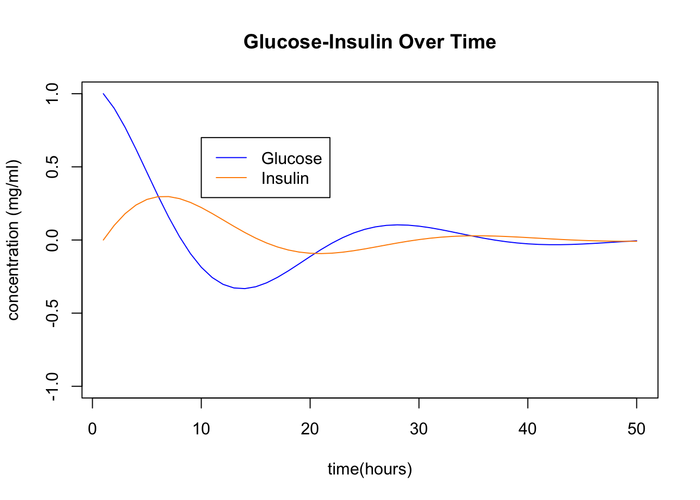
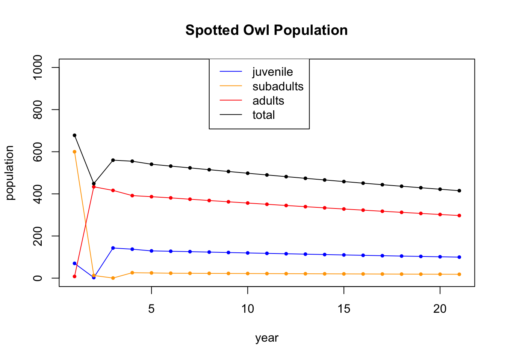
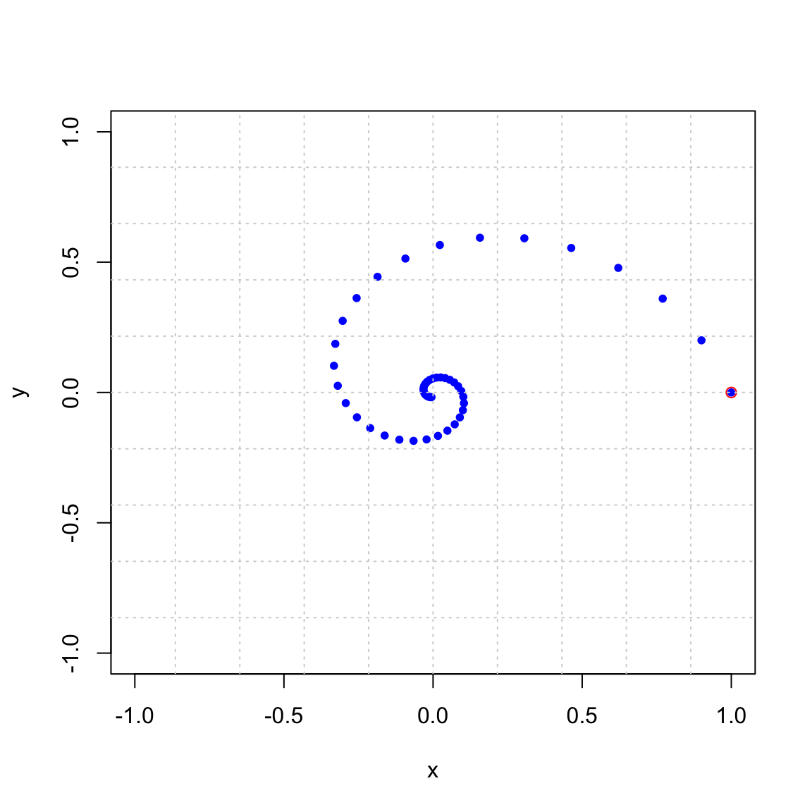
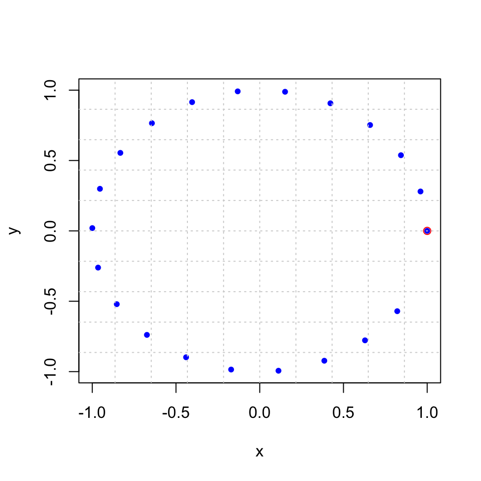
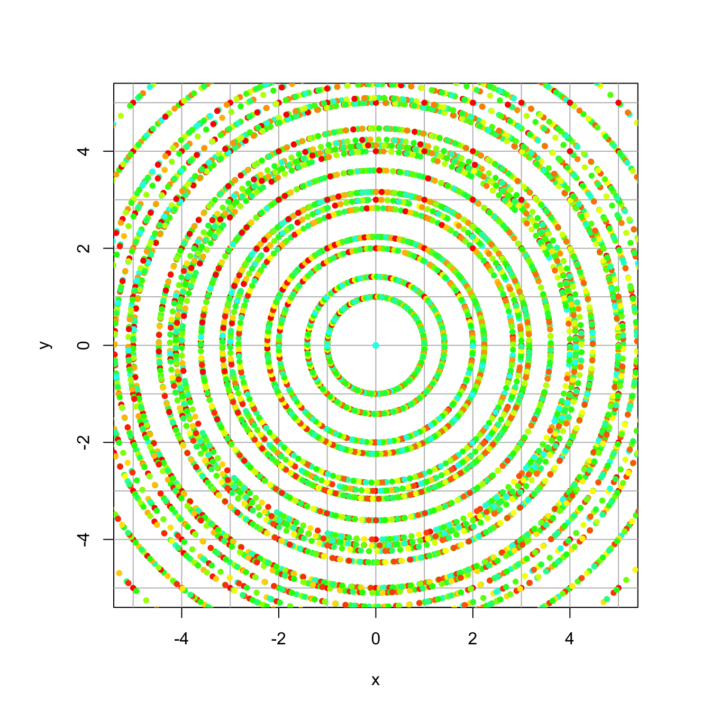

Section 16 Complex Eigenvalues
Now we will explore what happens if the matrix has complex eigenvalues.
16.1 Motivating Example
Recall the rental car problem that has the following matrix and eigenvectors.
## [,1] [,2] [,3]
## [1,] 0.85 0.3 0.35
## [2,] 0.09 0.6 0.05
## [3,] 0.06 0.1 0.60## eigen() decomposition
## $values
## [1] 1.000+0.000000i 0.525+0.037081i 0.525-0.037081i
##
## $vectors
## [,1] [,2] [,3]
## [1,] 0.9497414+0i 0.6201737+0.0000000i 0.6201737+0.0000000i
## [2,] 0.2389672+0i -0.3100868-0.4599331i -0.3100868+0.4599331i
## [3,] 0.2022030+0i -0.3100868+0.4599331i -0.3100868-0.4599331iIt has complex eigenvalues and eigenvectors.
\[ \begin{bmatrix} .85 & .30 & .35 \\ .09 & .60 & .05 \\ .06& .10 & .60 \end{bmatrix} \qquad\qquad \begin{array}{ccccc} \lambda_1 = 1.0, && \lambda_2 = .525+.037i, && \lambda_3 =.525-.037i \\ \begin{bmatrix} .95 \\ .24 \\ .20 \end{bmatrix} && \begin{bmatrix} ~~.62 + .00i \\ -.31 - .46i \\ -.31+ .46i\end{bmatrix} && \begin{bmatrix} ~~.62 - .00i \\ -.31 + .46i \\ -.31 - .46i\end{bmatrix} \end{array} \]
We can diagonalize as usual, but it gives us a diagonal matrix with complex eigenvalues.
\[ \begin{bmatrix} .85 & .30 & .35 \\ .09 & .60 & .05 \\ .06& .10 & .60 \end{bmatrix} = \underbrace{\begin{bmatrix} .95 & .62\!+\!.00i & .62\!-\!.00i \\ .24 & -.31\!-\!.46i & -.31\!+\!.46i \\ .20 & -.31\!+\!46i & -.31\!-\!.46i \end{bmatrix}}_P \begin{bmatrix} 1.0 & 0 & 0\\ 0 & .35\!-\!.04i & 0 \\ 0 & 0 & .35\!+\!.04i \end{bmatrix} P^{-1}. \]
This diagonalization isn’t as usful to us though, since it requires complex eigenvectors that are not in \(\mathbb{R}^n\). Our original problem involved real numbers, so we can’t extract the information we need from this.
Instead, since our eigenvectors are of the form \(v = u \pm w i\). We use the real part \(u\) and the imaginary part \(w\) in our eigenbasis instead.
## v w u
## v 1 0.000000 0.000000
## w 0 0.525000 -0.037081
## u 0 0.037081 0.525000This matrix is not diagonal, but it has a nice form. Notice that the real and complex parts of the eigenvalues are in the 2x2 matrix inside. \[ \lambda = .525 \pm .037i. \hskip6in \] \[ \begin{bmatrix} .85 & .30 & .35 \\ .09 & .60 & .05 \\ .06& .10 & .60 \end{bmatrix} = \underbrace{\begin{bmatrix} .95 & .00 & .62 \\ .24 & -.46 & -.31 \\ .20 & .46 & -.31 \end{bmatrix}}_P \begin{bmatrix} 1.0 & 0 & 0\\ 0 & .525 & -.037 \\ 0 & .037 & .525 \end{bmatrix} \underbrace{\begin{bmatrix} .72 & .72 & .72 \\ .03 & -1.06 & 1.12 \\ .51 & -1.10 & -1.10 \end{bmatrix}}_{P^{-1}} \] Next we explore what 2x2 matrices of the following form do: \[ \begin{bmatrix} .525 & -.037 \\ .037 & .525 \end{bmatrix} =\begin{bmatrix} a & -b \\ b & a \end{bmatrix}, \qquad \lambda = a\pm b i. \]
16.2 Rotation-Dilation Matrices
First we explore a special case of 2x2 matrices with complex eigenvalues of the following form:
\[
R=\begin{bmatrix}
a & -b \\
b & a \\
\end{bmatrix}
\]
As we see in the image below, this matrix rotates by angle of \(\theta\) and expands (dilates) or contracts by a factor of \(r\) where
\[
\begin{align}
\theta &= \arctan(b/a) \\
r &= \sqrt{a^2 + b^2}
\end{align}
\]

Furthermore the eigenvalues of this matrix are the complex values \[ \lambda_1 = a + b i \qquad \lambda_2 = a - b i \] where \(i = \sqrt{-1}\). These eigenvalues are conjugate pairs and are often written as \(\lambda = a \pm b i\). They come from applying the quadratic formula to the characteristic polynomial and getting a negative discriminant under the square root. It is important to note that both the angle of rotation \(\theta\) and the dilation factor \(r\) are contained in the eigenvalues. The fact that these are the eigenvalues is derived in the video. We will illustrate it here in three examples.
16.2.1 Example 1
Our first example has \(a = .9\) and \(b = .2\).
## [,1] [,2]
## [1,] 0.9 -0.2
## [2,] 0.2 0.9We look at its eigenvectors and eigenvalues and see that \(\lambda = .9 \pm .2 i\):
eigen(A)## eigen() decomposition
## $values
## [1] 0.9+0.2i 0.9-0.2i
##
## $vectors
## [,1] [,2]
## [1,] 0.7071068+0.0000000i 0.7071068+0.0000000i
## [2,] 0.0000000-0.7071068i 0.0000000+0.7071068iNotics that the eigenvectors also come in conjugate pairs, with a real and a complex part. This always happens.
\[
\vec{\mathsf{v}} =
\begin{bmatrix}0.707 \\ 0.000 \end{bmatrix} \pm
\begin{bmatrix} 0.000 \\ .707 \end{bmatrix} i
\]
Now, let’s find the angle of rotation. We will use the Arg command which finds the angle (in radians) of a complex number. We also convert it to degrees here.
vals = eigen(A)$values
v1 = vals[1]
Arg(v1) # gives the argument, or angle, of a complex number (in radians)## [1] 0.2186689Arg(v1) / (2*pi) * 360 # convert to degrees## [1] 12.52881For good measure, we can compare with using the arctan function.
atan(.2/.9) ## [1] 0.2186689Next we find the dilation/contraction factor. We can do so using the Mod command, which finds the “modulus” or absolute value or length of a complex number.
Mod(v1) # gives the length of a complex number## [1] 0.9219544And, again for good measure, we compare with using the Pythagorean theorem:
sqrt(.9^2 + .2^2) ## [1] 0.9219544Now, we observe the trajectory of a single point \((0,1)^T\) under this matrix. In this picture you can see that it is contracting and rotating by 12.5 degrees. Note that 360/12.5 is about 29, and it takes 29 applications to go once around the circle. You can count them in the plot below. Furthermore, \((0.9219544)^29 =0.095\) and after 29 applications the vector is about 1/10 of its original length.
 We can also view this by looking at a plot of the x and y coordinates over time as the point (x,y) circles around in the xy-plane. Key point: complex eigenvalues lead to oscillating values of the individual coordinates

We can also use trajectory_plot from [Dynamical Systems in 2D] to watch what happens to a whole grid of points under this transformation. It is beautiful!
trajectory_plot(A, t=30, datamax=5, plotmax=5, numpoints=10)
16.2.2 Example 2
Here is a second example of a rotation-dilation matrix, this time with \(a = .96\) and \(b = .28\).
(A = cbind(c(.96,.28),c(-.28,.96)))## [,1] [,2]
## [1,] 0.96 -0.28
## [2,] 0.28 0.96eigen(A)## eigen() decomposition
## $values
## [1] 0.96+0.28i 0.96-0.28i
##
## $vectors
## [,1] [,2]
## [1,] 0.7071068+0.0000000i 0.7071068+0.0000000i
## [2,] 0.0000000-0.7071068i 0.0000000+0.7071068iWe check the angle of rotation and the dilation factor
vals = eigen(A)$values
v1 = vals[1]
Arg(v1) # gives the argument, or angle, of a complex number (in radians)## [1] 0.2837941Arg(v1) / (2*pi) * 360 # convert to degrees## [1] 16.2602Mod(v1) # gives the length of a complex number## [1] 1Notice that the dilation factor is 1, which is seen in the following plots. Here are 21 iterations:

And here are 200 iterations

And a trajectory plot:

16.2.3 Example 3
A third and final example.
(A = cbind(c(.99,.16),c(-.16,.99)))## [,1] [,2]
## [1,] 0.99 -0.16
## [2,] 0.16 0.99eigen(A)## eigen() decomposition
## $values
## [1] 0.99+0.16i 0.99-0.16i
##
## $vectors
## [,1] [,2]
## [1,] 0.0000000-0.7071068i 0.0000000+0.7071068i
## [2,] -0.7071068+0.0000000i -0.7071068+0.0000000ivals = eigen(A)$values
v1 = vals[1]
Arg(v1) / (2*pi) * 360 # convert to degrees## [1] 9.180542Mod(v1) # gives the length of a complex number## [1] 1.002846We see that the dilation factor is \(r = 1.0028\) and the angle of rotation is \(9.18\) degrees. Here are 100 iterations.

And a trajectory plot:

16.3 General 2x2 Matrices with Complex Eigenvalues
Now suppose we have a 2x2 matrix with complex eigenvalues \(\lambda = a \pm b i\) and complex eigenvectors \(\mathsf{v} = \mathsf{u } \pm \mathsf{w} i\) that is not in rotation-dilation form. Here is an example: \[ A = \begin{bmatrix} 1.19 & -0.38 \\ 0.29 & 0.78 \end{bmatrix} \] It has eigenvalues and eigenvectors \[ \lambda = 0.985 \pm 0.261 i \qquad \mathsf{v} = \begin{bmatrix} 0.753 \\ 0.406 \end{bmatrix} \pm \begin{bmatrix} 0.000 \\ -0.517 \end{bmatrix} i \] as seen here:
(A = cbind(c(1.19,0.29),c(-.38,.78)))## [,1] [,2]
## [1,] 1.19 -0.38
## [2,] 0.29 0.78eigen(A)## eigen() decomposition
## $values
## [1] 0.985+0.2611034i 0.985-0.2611034i
##
## $vectors
## [,1] [,2]
## [1,] 0.7531030+0.0000000i 0.7531030+0.0000000i
## [2,] 0.4062793-0.5174679i 0.4062793+0.5174679iThe angle of rotation and factor of dilation are \(\theta = 14.8\) degrees and \(r = 1.019\) as we see from these computations:
## [1] 14.84649## [1] 1.019019A trajectory plot shows us that it is still rotating by 14.8 degrees and dilating by 1.019, but it is taking more of an elliptical pattern.

We can also view this by looking at a plot of the x and y coordinates over time as the point (x,y) circles around in the xy-plane. Key point: complex eigenvalues lead to oscillating values of the individual coordinates
To see precisely what happens, we change to basis \(\{\mathsf{w}, \mathsf{u}\}\) where \(\mathsf{w}\) and \(\mathsf{u}\) are the imaginary and real parts of the eigenvector \(\mathsf{v} =\mathsf{u} + \mathsf{w} i\). In this case the eigenvalues and eigenvectors are \[ \lambda = 0.985 \pm 0.261 i \qquad \mathsf{v} = \begin{bmatrix} 0.753 \\ 0.406 \end{bmatrix} \pm \begin{bmatrix} 0.000 \\ -0.517 \end{bmatrix} i \] So if we make the change of basis matrix \(P = [\mathsf{u},\mathsf{w}]\) \[ P = \begin{bmatrix} 0.000 & 0.753 \\ -0.517 & 0.406 \end{bmatrix} \] then we can factor \(A\) as \[ A = \begin{bmatrix} 1.19 & -0.38 \\ 0.29 & 0.78 \end{bmatrix} = \underbrace{\begin{bmatrix}0.000 & 0.753 \\-0.517 & 0.406 \end{bmatrix}}_P \underbrace{\begin{bmatrix} 0.985 & - 0.261 \\ 0.261 & 0.985 \end{bmatrix}}_R \underbrace{\begin{bmatrix}0.000 & 0.753 \\-0.517 & 0.406 \end{bmatrix}^{-1}}_{P^{-1}} \] We have not diagonalized \(A\). Rather we have rotation-dilationalized (made up term) the matrix \(A\). At is core \(A\) is a rotation-dilation matrix whose angle and dilation factor come from the eigenvalue. The matrix \(P\) is a change of basis matrix. It is rotating and dilating in this new coordinate system, which are the vectors in the plot above.
If we multiply the other way, we get \[ P^{-1} A P = \begin{bmatrix} 0.985 & - 0.261 \\ 0.261 & 0.985 \end{bmatrix} = R \] Which we can see using R
## [,1] [,2]
## [1,] 0.0000000 0.7531030
## [2,] -0.5174679 0.4062793## [,1] [,2]
## [1,] 0.9850000 -0.2611034
## [2,] 0.2611034 0.985000016.4 Examples from class
16.4.1
(A = cbind(c(.9,.2),c(-.2,.9)))## [,1] [,2]
## [1,] 0.9 -0.2
## [2,] 0.2 0.9(vals=eigen(A)$values)## [1] 0.9+0.2i 0.9-0.2iMod(vals)## [1] 0.9219544 0.9219544Arg(vals)/(2*pi)*360## [1] 12.52881 -12.52881
16.4.2
(A = cbind(c(1.19,.29),c(-.38,.78)))## [,1] [,2]
## [1,] 1.19 -0.38
## [2,] 0.29 0.78(vals=eigen(A)$values)## [1] 0.985+0.2611034i 0.985-0.2611034iMod(vals)## [1] 1.019019 1.019019Arg(vals)/(2*pi)*360## [1] 14.84649 -14.84649
16.5 The checkpoint question
(A = cbind(c(1,1),c(-1,2)))## [,1] [,2]
## [1,] 1 -1
## [2,] 1 2eigen(A)## eigen() decomposition
## $values
## [1] 1.5+0.866025i 1.5-0.866025i
##
## $vectors
## [,1] [,2]
## [1,] -0.3535534+0.6123724i -0.3535534-0.6123724i
## [2,] 0.7071068+0.0000000i 0.7071068+0.0000000ivals=eigen(A)$values
Mod(vals)## [1] 1.732051 1.732051Arg(vals)/(2*pi)*360## [1] 30 -30